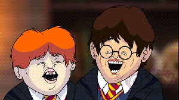

Leviossaaaa!
Esse é o primeiro feitiço ensinado a Harry no seu primeiro ano; é um feitiço relativamente simples, mas apenas Hermione consegue fazê-locom perfeição logo na primeira vez. Isso é comentado em três outras passagens na série.
No primeiro livro, Ron usa esse feitiço para levitar um porrete sobre a cabeça de um Troll da Montanha; quando ele libera o feitiço,o porrete cai sobre a cabeça do Troll. Depois, no último livro, Harry o usa no sidecar que estava caindo da moto voadora. De fato,Harry estava dentro do sidecar quando usa Wingardium Leviosa nele; embora a habilidade de voar sem ajuda seja excepcional entre os bruxos,a habilidade de enfeitiçar objetos nos quais você está montado é relativamente simples. Em terceiro lugar, no último livro também, Ron usa o feitiço num galho caído do Salgueiro Lutador, para tocar no nó do tronco da árvore, que faz com que ela pare de atacar violentamente todos os que dela se aproximam.O Trio então entra no túnel que leva do Salgueiro até a Casa dos Gritos.
Wingardium Leviosa também é mencionado implicitamente no livro cinco, no capitulo sobre os exames N.O.M.s de Harry.Quando procura a resposta para a primeira pergunta em seu teórico exame de Feitiços, Harry na mesma hora recorda de quando derrotaram o Troll da Montanha no seu primeiro ano,s e a resposta aparece com facilidade, o que reduz seu nervosismo inicial.

Harry po#$@
A Escola de Magia e Bruxaria de Hogwarts, ou simplesmente Hogwarts, é um internato de magia para bruxos e bruxas britânicos com idades entre onze e dezessete anos.
É o palco principal dos primeiros seis livros da série Harry Potter, de J. K. Rowling, cada livro equivalendo a um ano letivo. No volume derradeiro da série,Harry Potter e as Relíquias da Morte, no entanto, a maior parte da história se passa fora de Hogwarts, uma vez que os personagens principais, Harry Potter, Ronald Weasley e Hermione Granger,não atendem ao sétimo e último grau de ensino (embora Rowling tenha declarado que Hermione retorna à escola depois dos acontecimentos descritos em Harry Potter e as Relíquias da Morte para prestar os seus exames de Níveis Incrivelmente Exaustivos de Magia).
A batalha climática do livro e da série, no entanto, ocorre em Hogwarts.